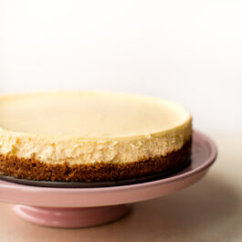

Cheesecake Water Bath
Cheesecakes are nice and tasty foods that you can feed your guests the next time you have a get together or a family gathering or any other kind of party. (note: this is not my recipe. You can find the original recipe here.)

Ingredients:
- 10 full sheet of graham crackwrs (cus what's a cake without a crust?)
- 5 tablespoons of melted unsalted butter
- 1 and a quarter cups of granulated sugar (so that it isn't too sweet)
- Four 8-ounce blocks of full fat cream cheese (its better to use the blocks than the spreads)
- 1 cup of full fat sour cream (heavy cream may work instead)
- 1 teaspoon of pure vanilla extract (because cheesecake)
- 2 teaspoons of lemon juice (gives it a little extra flavor)
- 3 large eggs (to keep away the vegans...plus it helps with flavor)
- 9-10 inch springform pan is recommended (to make everything a bit easier...although it is prone to leaking)
Instructions
- First thing you have to do is to adjust the oven rack to "the lower-middle position" and then preheating it to 350°F or 177°C for the non-Americans here.
- Next, you make the graham cracker crust by breaking the graham crackers into crumbs, then pouring those crumbs into a bowl with a quarter cup of sugar and 5 tablespoons of melted butter. Stir them together until they combine and become a bit sandy. Press it down firmly into the bottom of the pan, and then pre-bake for eight minutes. After removing it from the oven, place it down onto some aluminum foil to allow it to cool down.
- Next you use a handheld or stand mixer to beat the cream cheese and granulated sugar together until its smooth and creamy. Afterwards, you add in the vanilla extract, sour cream, and lemon juice and then beat it until they fully combine. Next you add in the eggs one at a time and beat each one til they get fully incorporated. After, stop beating the batter.
- Next step is to start boiling a pot that contains about one inch of water. Wrap the aluminum foil around the pot, then pour the cheesecake batter into the pot and smooth it out, then place it inside of a large roasting pan. While its in there, pour the boiled water into it, then place it into the oven.
- Bake the cheesecaker for 55-70 minutes, or until the center is almost done (whichever comes first I reckon). Open the oven door, then let the cheesecake cool down in the oven for about an hour. Let the cheesecake cool down at room temperature completely unwrapped. Then cpver it back up and refrigerate it for at least 4 hours (although you can do it overnight).
- Remove the cheesecake from the pan and serve it to whoever you made it for with the desired toppings (whatever that may be).